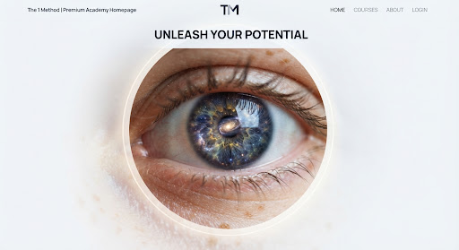

CORE

Foundation of Spiritual Medicine
The essential entry point into the integration of consciousness and physical health.
An International Academy for Consciousness, Rehabilitation, and Transformational Education led by Osie Steinberg.
"Healing is the bridge between the physical structure and the consciousness that inhabits it."
Osie Steinberg is a master clinician whose work spans three decades of integrating deep physiological expertise with spiritual medical paradigms.
As a Licensed Physiotherapist and Spiritual Medicine practitioner, she has developed 'The 1 Method' to provide a rigorous, evidence-based pathway for practitioners seeking to master the subtle arts of consciousness-based rehabilitation.
Through international symposiums, clinical mentorships, and published work, Osie has trained thousands of healthcare professionals globally, establishing a new paradigm for holistic rehabilitation.
A multidimensional approach to human flourishing, grounded in clinical precision and expanded awareness.
Understanding the neurological and spiritual blueprints that dictate health outcomes and personal potential.
Clinical physiotherapy techniques refined to address the somatic storage of trauma and energetic blockages.
Ancient wisdom protocols for modern rehabilitation, focusing on the subtle energy bodies and cellular memory.
Our curriculum is designed to take you from foundational understanding to elite professional practice.
Mastering the vocabulary of spiritual medicine and structural mechanics.
Synthesizing consciousness studies with hands-on rehabilitation protocols.
Global accreditation and entry into the international faculty network.

World-class education for the next generation of healers.
The essential entry point into the integration of consciousness and physical health.

Complex clinical cases re-envisioned through the lens of energetic rehabilitation.

Deep dive into the metaphysics of healing and the latest breakthroughs in neuro-spirituality.

Academy Keynote • Watch Video

Lab Demo • Watch Video

Community • Watch Video

Research Panel • Watch Video

Case Study • Watch Video

Masterclass • Watch Video
Join Osie Steinberg and international faculty in person or virtually for immersive clinical intensives, hands-on spinal labs, and professional certifications.
Our global events bring together leading medical specialists, physiotherapists, and somatic practitioners to explore breakthroughs in spiritual medicine. Private hospital workshops and custom clinical team certifications are also available upon request worldwide.
Three-day clinical certification for physiotherapists & medical practitioners.
Virtual global conference featuring Osie Steinberg & guest keynote speakers.
Hands-on spinal alignment and consciousness rehabilitation laboratory.
Annual gathering of global academy alumni, faculty, and clinical pioneers.

Countries Represented
Graduated Practitioners
Medical Clinics Using The Method
Healings Facilitated
"The 1 Method provides a clinical bridge that we've been missing for decades. It empowers the practitioner to treat the human, not just the symptom."
Director of Orthopedics, SVMC
"Learning from Osie is a transformative experience. Her depth of physiological knowledge paired with her spiritual wisdom is unlike anything in the field."
Senior Rehabilitation Specialist
"Applying consciousness-based structural alignment cut our average post-operative recovery timelines by over 35%. The clinical results speak for themselves."
Chief of Neurological Rehabilitation
"Osie Steinberg has created a global benchmark for integrative health education. Our entire clinical team is certified in The 1 Method."

Chair of Somatic Medicine, Zurich
"The integration of energetic principles with physical therapy gives us unprecedented breakthroughs in patients who had given up on recovery."

Lead Physical Therapist, Vanguard Spine
Exploring the physical manifestations of consciousness-based injury and new protocols for release.

Bridging classical philosophy with contemporary spiritual medicine to find a new middle ground.

Data-driven analysis of patient recovery speeds when consciousness protocols are applied.
Yes, our programs carry international accreditation from leading health education boards. Most modules contribute toward Professional Development (CEU) credits for licensed clinicians.
While many of our students are clinical professionals, we offer 'Foundational' tracks open to dedicated practitioners from all backgrounds who meet our admission criteria.
The full transformation journey typically takes 18 to 24 months, including clinical practice hours and a final supervised thesis project.
Apply for enrolment in The 1 Method certification tracks.